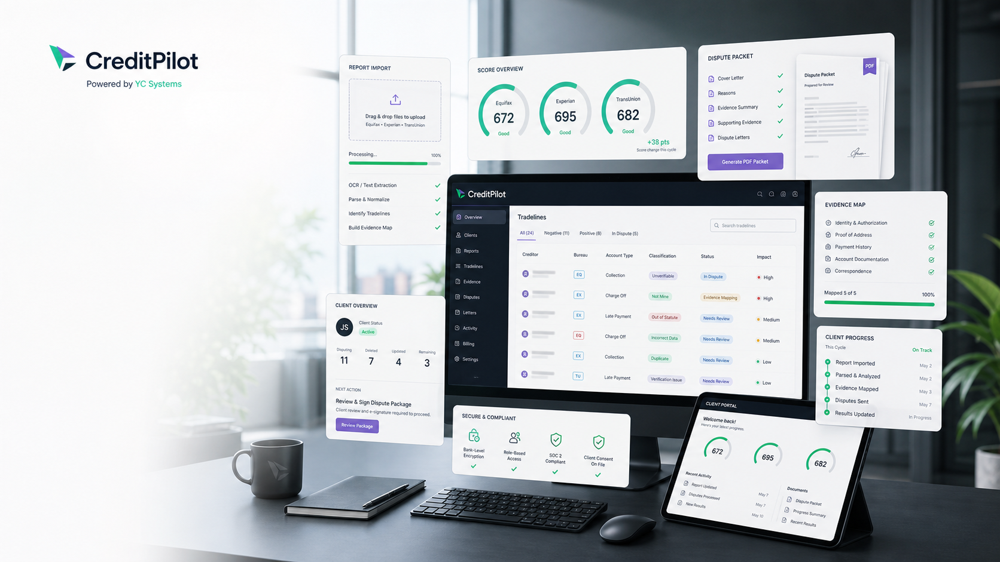
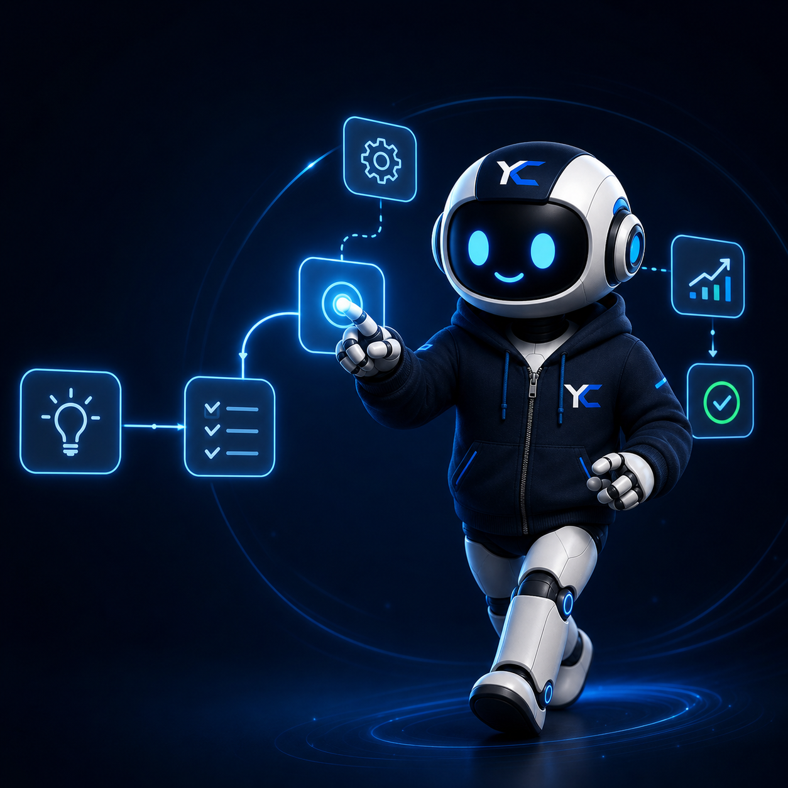

Bases preparadas para usuarios, roles, datos, módulos, integraciones y nuevas fases.
YC Systems LLC · Software operativo
Software operativo para negocios que necesitan control y crecimiento
Construimos productos SaaS, sistemas internos, CRM, dashboards y automatización para convertir operaciones desordenadas en plataformas claras, medibles y listas para crecer.
Productos SaaS · sistemas internos · automatización · soporte para crecimiento por fases
Por qué empresas eligen YC Systems
Una empresa de software para construir sistemas completos de negocio
YC Systems combina estrategia de producto, ingeniería, diseño, automatización y soporte para convertir una operación real en una plataforma clara, mantenible y lista para crecer por fases.
Alcance definido, privacidad, control de cambios y publicación responsable.
El proyecto queda listo para mantenimiento, mejoras, documentación y evolución.
Productos propios, casos de cliente, procesos reales y activos publicados verificables.
Productos creados por YC Systems
Productos propios para mercados operativos claros
YC Systems construye software propio a partir de problemas reales: lavanderías, ventas, bienes raíces, operaciones internas y futuros verticales financieros.
Algunos productos de YC Systems están disponibles solo mediante acceso controlado, acceso temprano o implementación seleccionada con clientes.
Primer producto público
CleanLoop para lavanderías modernas
El primer producto público de YC Systems: órdenes, clientes, recogidas, entregas, pagos y flujo diario desde un solo sistema.
Acceso controlado / implementación temprana
Operadores seleccionados
Creado por YC Systems
Disponible para operadores seleccionados y socios de implementación temprana.

Acceso tempranoCleanLoop
Plataforma operativa para lavanderías modernas
Gestiona órdenes, clientes, recogidas, entregas y operación desde un solo sistema.
Ver CleanLoop
Línea de productoSOC
Sistema operativo privado para ventas y operaciones de negocio
Línea de producto YC Systems para flujos comerciales, inventario, reservas, reportes y visibilidad operativa.
Línea de producto seleccionada
Acceso controladoBrokerControl
Plataforma de operaciones inmobiliarias para brokers y equipos
Creada para seguimiento de clientes, ventas, documentos, pipeline, agenda y próximos pasos.
Acceso controlado
En desarrolloCreditPilot
Producto de operaciones financieras en desarrollo interno
Línea futura de YC Systems para operaciones financieras guiadas, casos, documentos y portales de clientes.
En desarrolloMentalidad de empresa de producto
Construido con mentalidad de producto, no con improvisación
Entregas versionadas, implementación por fases, alcance claro, acuerdos documentados y soporte a largo plazo.
Definimos alcance, prioridades, entregables y límites antes de construir.
Construimos por fases para lanzar más rápido y reducir riesgo operativo.
El sistema puede evolucionar con nuevas versiones, mejoras y módulos.
Propuestas, acuerdos, términos y privacidad mantienen la operación clara.
El proyecto queda preparado para mantenimiento, soporte y crecimiento.
YC Systems mantiene páginas legales y de confianza públicas para clientes.
Cómo construimos
Primero entendemos la operación y luego diseñamos el sistema
Entendemos el flujo de trabajo y el problema de negocio antes de convertirlo en alcance, arquitectura, diseño, desarrollo, lanzamiento y soporte.
Entendemos el negocio, el problema, los usuarios, prioridades y resultado esperado.
Definimos módulos, datos, roles, integraciones, fases y alcance inicial.
Convertimos el flujo en pantallas claras, responsive y enfocadas en conversión o uso diario.
Construimos la primera fase con estructura mantenible y preparada para evolucionar.
Probamos, publicamos, documentamos y dejamos el proyecto listo para operar.
Mantenimiento, mejoras, nuevas fases y acompañamiento para que el sistema crezca.
Soluciones para clientes
Construimos la primera versión del sistema que tu negocio necesita
Menos catálogo, más dirección: diagnosticamos la operación y convertimos la necesidad en una primera fase clara, vendible y mantenible.
Presencia comercial
Sitios y landings para empresas que necesitan explicar, vender y generar confianza desde el primer contacto.
- Mensaje comercial
- Diseño responsive
- SEO base
- Contacto claro
Sistemas internos
Plataformas privadas para controlar roles, estados, tareas, documentos y operación diaria.
- Usuarios y roles
- Pipeline o estados
- Formularios y reportes
- Panel administrativo
CRM operativo
Seguimiento comercial para prospectos, clientes, tareas, cotizaciones, documentos y cierres.
- Prospectos
- Pipeline
- Tareas
- Clientes
Dashboards ejecutivos
Indicadores, reportes y vistas ejecutivas para tomar decisiones con datos visibles.
- Métricas clave
- Visualización limpia
- Filtros y estados
- Reportes operativos
Automatización
Flujos, alertas, integraciones y reglas para reducir trabajo repetitivo y errores manuales.
- Alertas
- Estados
- Integraciones
- Procesos
Producto SaaS
Primera versión, lanzamiento por fases y base técnica para productos que deben crecer.
- Alcance inicial
- Modelo de usuarios
- Módulos mínimos
- Ruta de lanzamiento
Soporte continuo
Mejoras continuas, ajustes, documentación y evolución de sistemas ya publicados.
- Correcciones
- Mejoras
- Documentación
- Nuevas fases
Cómo trabaja YC Systems
Entendemos la operación para construir la solución correcta
La misma base puede convertirse en web profesional, CRM, portal, dashboard, automatización o SaaS por fases según el problema real del negocio.
Negocio
Diagnóstico Nexus
Sistema digital
Módulos
Usuarios
Diagnóstico
Ruta de sistema
Problema · alcance · primera fase
Web + ventaPresencia comercialSitios, catálogos, landings y flujos de contacto.
CRM operativoSeguimiento y clientesProspectos, tareas, documentos y estados.
Portal internoRoles y operaciónClientes, equipos, rutas, pagos y procesos.
DashboardDatos ejecutivosIndicadores, reportes y decisiones visibles.
Tecnología aplicada a negocio
Stack moderno, presentado como valor empresarial
La tecnología importa cuando mejora ventas, control, velocidad, seguridad y mantenimiento. YC Systems combina herramientas modernas con una ejecución entendible para clientes.
.NET
Blazor
Flutter
Azure
SQL Server
PostgreSQL
Firebase
Stripe
QA
Docker
Google Maps
REST APIs
Integraciones IA
Industrias
Una misma arquitectura aplicada a operaciones distintas
Bienes raíces
Operaciones de lavandería
Reparación de crédito
Retail y comercio
Negocios de servicios
Clientes
Casos publicados que prueban ejecución
Negocios reales, sitios activos y entregas visibles. Estos casos muestran ejecución sin mezclarse con los productos propios de YC Systems.

GhostWear
E-commerce activoGhostWear
ghostwear1.comProblema: vender productos sin depender de mensajes sueltos.
Solución: catálogo, carrito y pedidos por WhatsApp.
Resultado: tienda activa lista para vender.
Ver sitio activo
AntonyBienes raíces
Asesor inmobiliarioAntony
Bienes raíces
antonyrealestate.comProblema: presentar con confianza asesoría inmobiliaria en RD.
Solución: web profesional, mensaje claro y contacto directo.
Resultado: presencia comercial más seria.
Ver sitio activo
LPS Company
Web corporativaLPS Company
lps-company.comProblema: marca sin presencia corporativa clara.
Solución: identidad, base digital y presentación comercial.
Resultado: compañía preparada para crecer.
Ver sitio activo
LucianoWash
ServiciosLucianoWash
lucianowash.lps-company.comProblema: servicios, confianza y contacto dispersos.
Solución: sitio bilingüe con marca, WhatsApp y servicios claros.
Resultado: experiencia móvil lista para clientes.
Ver sitio activo
Snackeria
Marca de convenienciaSnackeria
snackeriado.lps-company.comProblema: explicar una oferta nueva de conveniencia.
Solución: presencia digital clara con propuesta y contacto.
Resultado: marca lista para presentar.
Ver sitio activoMétodo Nexus
Nexus es la forma en que YC Systems piensa
Analizar la operación. Diseñar el sistema. Automatizar el flujo. Mejorar continuamente. Nexus convierte operaciones desordenadas en sistemas claros.
Tecnología
Automatización
Construcción
Crecimiento
Confianza
Explorar Nexus OS

Siguiente paso
Convierte tu operación en un sistema claro
Cuéntanos qué necesitas controlar, vender o automatizar. YC Systems responde con una ruta inicial: alcance, primera fase, entregables y recomendación técnica.